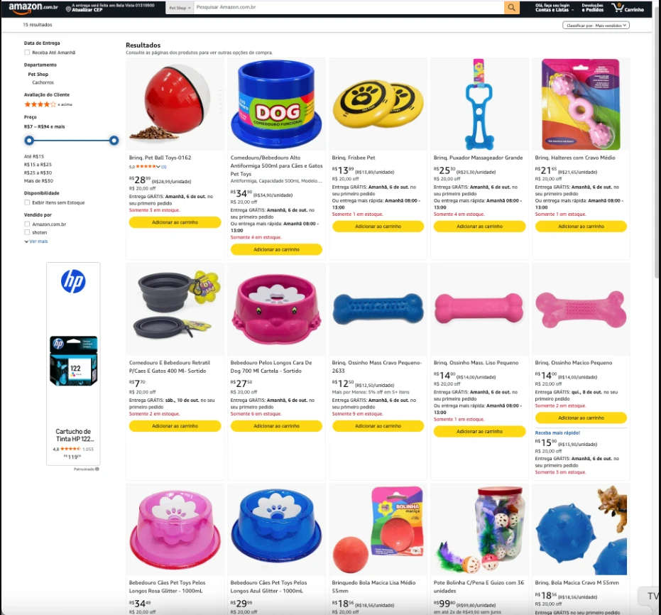
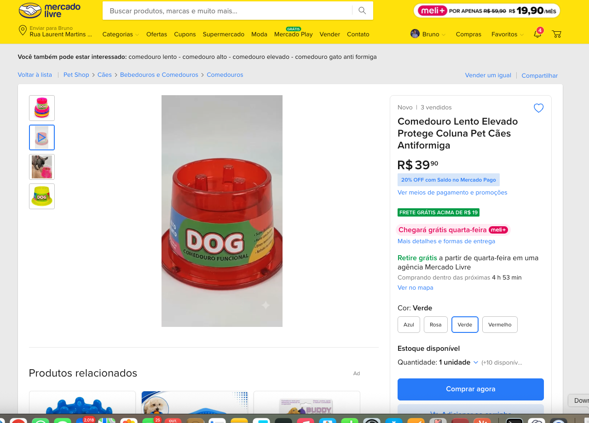
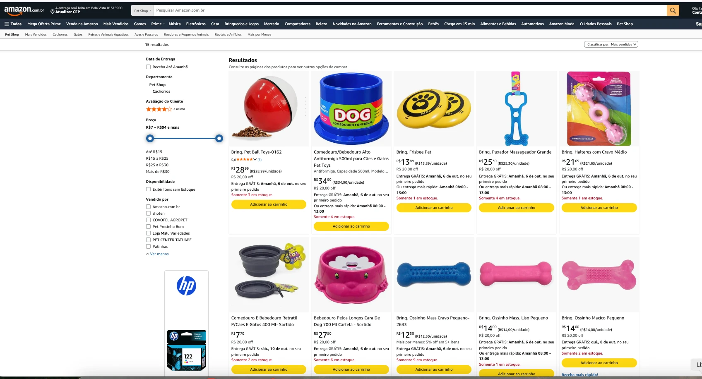
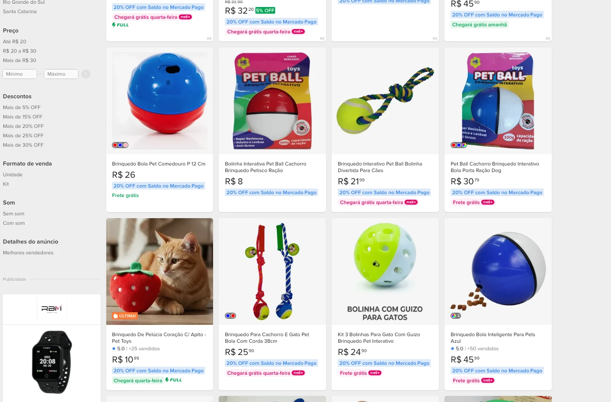
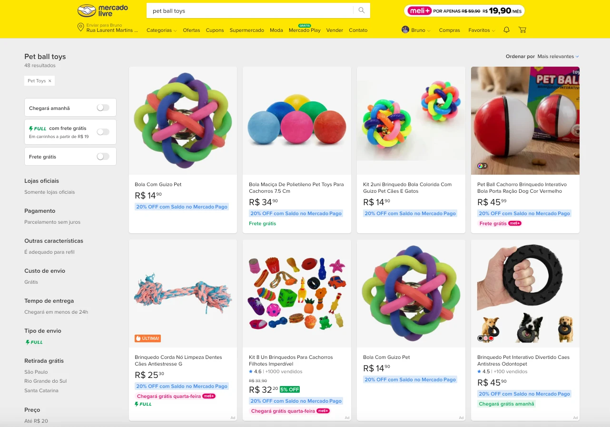
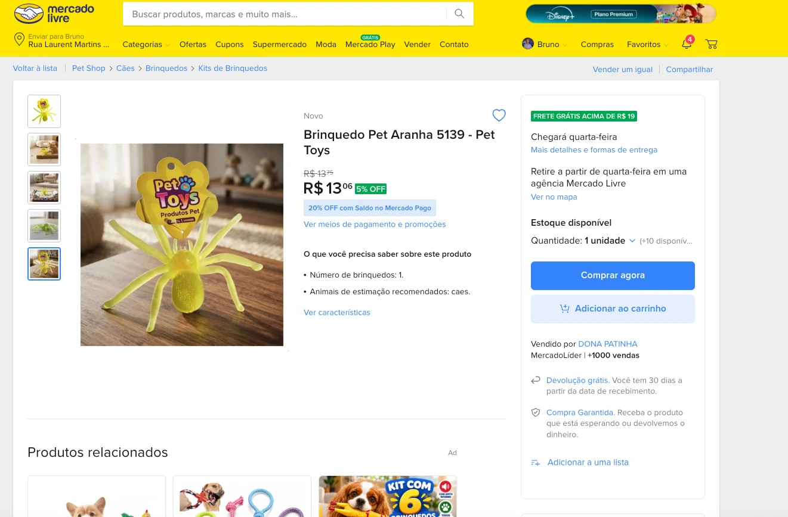

Onde a Pet Toys está
nos marketplaces hoje
Sem acesso a
nada de vocês
Nenhum login, nenhuma planilha, nenhum dado interno. Tudo que está aqui qualquer pessoa vê na Amazon e no Mercado Livre, e vocês conferem agora, na nossa frente.
A regra que seguimos
Todo número tem fonte, data e nome de vendedor. Onde não conseguimos confirmar, está escrito que não conseguimos. Nada aqui é estimativa nossa apresentada como fato.
O que ficou por verificar: a linha de gatos na Amazon, as fichas sem estoque (o filtro padrão esconde), a contagem de anúncios no Mercado Livre e na Shopee, e quem é o vendedor de cada uma das quinze fichas. Isso entra na segunda rodada, com a ferramenta de dados de Mercado Livre.
Quinze fichas para uma
fábrica de 50 mil m²
O site da Pet Toys lista 50 brinquedos só para cães, mais comedouros, bebedouros e seis linhas para gatos: Glitter, Neon, Prime, Acrílico, Clássica e Degradê.
Brinquedo, comedouro e bebedouro, tudo junto, somam quinze. É o que o comprador da Amazon vê da marca.

A ficha não diz
o nome de vocês
Doze dos quinze títulos não trazem “Pet Toys”. O que trazem é a linha do estoque: “Brinq.”, “Mass”, “Macico”, “P/Caes”, “-0162”, “-2633”.
O título é a primeira coisa que a busca da Amazon lê. Quem procura “ossinho para cachorro” não encontra “Brinq. Ossinho Mass Cravo Pequeno-2633”.

ficha do comedouro alto antiformiga 500 ml
salvar como deck/img/amz-ficha-comedouro.webp
A cor que o comprador
não escolhe
O comedouro alto existe em quatro cores. Na Amazon, o campo “Cor” diz Azul e não há botão para escolher outra. No Mercado Livre, um vendedor montou sozinho a variação com as quatro.
Na Amazon, cor é variação de uma ficha única: um clique, avaliações somadas, posição na busca somada. Aqui cada cor virou ficha solta, com preço próprio, ou virou “sortido”, que é a devolução esperando acontecer.

Amazon, mesma ficha com campo “Cor: Azul”: print pendente, salvar como deck/img/amz-ficha-comedouro.webp
Oito vendedores.
Quantos vocês escolheram?

Então a régua existe.
Ela só não chega até a tela.
Se vocês escolheram esses oito, o trabalho não é selecionar parceiro. É fazer a decisão de vocês aparecer no canal: qual sortimento cada um leva, com que ficha, em qual posição de preço.
Hoje nada disso está visível. Um vendedor que nem aparece no filtro da marca está com a buy box do comedouro. Quem olha a tela não distingue o parceiro escolhido do que chegou por conta própria.
O que chega por acaso
sai por acaso
Oito vendedores com uma a nove unidades cada um. Isso não é canal, é sobra de estoque de loja física anunciada na Amazon.
O risco não é o revendedor que está lá. É o próximo. Sem critério de credenciamento, quem chegar amanhã ocupa a mesma vitrine, cria a ficha do jeito que quiser, e vocês descobrem depois.
Um Pet Ball,
cinco preços
A mesma embalagem do Pet Ball aparece de R$ 8 a R$ 45,99. Não confirmamos se todos são o mesmo tamanho: o site lista o Pet Ball de 13 cm. O comprador também não confirma. Ele vê cinco preços para uma caixa igual.

Estoque de vitrine,
não de canal
Nas dez fichas em que o aviso é visível, todas mostram “somente N em estoque”. Três estão com uma unidade.
O que acabou nem aparece na tela. E quando a última unidade sai, a ficha some da busca e o histórico dela para. Um pote de 36 bolinhas a R$ 99,80, que é embalagem de balcão de pet shop, está no mesmo corredor do consumidor final.
Catorze fichas
sem nenhuma avaliação
Avaliação na Amazon só existe depois da compra. Das quinze fichas, uma tem avaliação: o Pet Ball, com 5,0★ e três avaliações. As outras catorze não têm nenhuma.
Ou a ficha é nova, ou não vende
Sete anos de Pet Toys e a Amazon não tem histórico nenhum da marca. Cada vez que um revendedor cria a ficha do zero, o pouco que vendeu antes fica na ficha antiga, que some quando o estoque acaba.
O comparável de 210 avaliações foi capturado na Amazon.com.br em 23 de setembro de 2026, na busca genérica de comedouro. É produto nacional, de plástico injetado, na mesma faixa de preço.
No Mercado Livre,
“Pet Toys” é qualquer coisa
A busca “pet ball toys” com o filtro de marca Pet Toys devolve 48 anúncios. Entre eles, produtos que não saem da fábrica de vocês.
O nome da marca é o nome da categoria em inglês. Qualquer vendedor que escreve “pet toys” no campo marca entra na mesma prateleira. Nós tivemos dificuldade de achar a fábrica no meio disso. O comprador não vai insistir.

Quem representa a marca lá:
dois alertas e um exemplo
O comedouro alto vermelho tem dois vendedores no catálogo. Ao lado dos dois, o Mercado Livre escreve em vermelho: “Não oferece um bom atendimento”. A aranha de brinquedo tem outro.
A Dona Patinha é pet shop de ração e remédio, com 1.300 seguidores, e vende o brinquedo de vocês com estoque, reputação e o nome da marca no título. A rede sabe fazer. O que falta é critério para decidir quem faz.

Catálogo do comedouro com os dois alertas: print pendente, salvar como deck/img/ml-catalogo-comedouro.webp
Qual jogo vocês
querem jogar?
Vocês falaram em controle de marca e em vender para a Amazon. A Amazon já vende a marca, e a rede já está nos dois canais. Por isso o caminho que recomendamos é ser dono do canal e fornecedor da Amazon, sem abrir loja própria. Mas a escolha é de vocês, e muda tudo que vem depois.
A Amazon compra. A rede vende.
A marca é dona do palco.
Vocês não disputam venda com ninguém. A Amazon passa a comprar de vocês em volume, o que resolve o estoque de uma a nove unidades. A rede continua no 3P, com critério. E a marca controla a ficha, a cor e o conteúdo que todos usam.
1P é outro jogo: pedido de compra, cobertura de estoque, fill rate, ficha no padrão que a Amazon exige. É o jogo de uma indústria, e vocês já são uma.
Em 1P quem decide o volume é a Amazon. Variável sobre decisão de terceiro é disputa garantida, e por isso não cobramos.
Então o conflito existe,
e é melhor tratá-lo agora
A marca vai disputar a mesma vitrine da rede que hoje compra dela. Fingir que não vai acontecer é o caminho mais rápido para uma guerra de preço em seis meses.
Antes de abrir venda direta é preciso definir o que a marca vende e o que fica com a rede. Linhas exclusivas do canal, kits, o que o distribuidor não compra. Sem isso, a primeira reclamação chega em semanas.
Sem estimar nada
Não temos acesso ao faturamento de vocês, então não vamos inventar quanto isso custa. O que está abaixo é o que dá para ver na tela, com print e data.
Nesta ordem,
e não em outra
Por que mídia fica por último
Tráfego pago para uma ficha sem a marca no título, sem cor para escolher e com uma unidade em estoque vira desconto. Não vira venda.
Isso é posicionamento, não cautela. Mídia entra como proposta separada, depois da primeira onda de fichas publicada e medida.
A impulsio opera dentro das contas de vocês. Os acessos, o registro de marca no canal e tudo que for construído pertencem à Pet Toys, inclusive se um dia vocês internalizarem a operação.
E pelo que
não respondemos
O que medimos
Linha de partida medida em 5 de outubro. Toda revisão compara contra ela.
O que não prometemos
Meta de faturamento. Faturamento depende de preço, estoque e decisão de vocês: três coisas que a operação não controla.
Agência promete crescimento e entrega explicação no terceiro mês. A impulsio responde pelo que dá para auditar na tela.
Também não fazemos, e está no escopo: atendimento ao comprador, devoluções, disputa com plataforma, foto e vídeo de produto. Questão jurídica de marca é do departamento legal de vocês.
O que ainda
não sabemos
Três respostas que só vocês têm, e que mudam o desenho do trabalho:
Este diagnóstico foi entregue antes de qualquer contrato, e fica com vocês independentemente do que decidirem. A planilha com as quinze fichas, os oito vendedores e os preços encontrados acompanha esta apresentação.